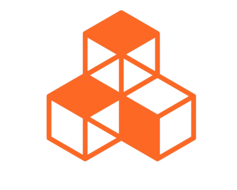

☰
Accueil
Solutions
Défis
Mini jeu
Quizz
À propos
Contact
Quel type de bâtisseur es-tu ?
1. Ton outil de rêve ?
Un crayon, pour dessiner des utopies impossibles
Une dynamite, pour "repenser" la ville à ma façon
Une truelle, mais uniquement en marbre italien
Un mégaphone. Et que ça saute !
2. Ta philosophie de la construction ?
"On ne construit bien qu’avec le cœur"
Des courbes, du verre, du rêve
On suit le plan, même s’il est à l’envers
Un rond-point par personne, et vive l’anarchie urbaine
3. Ton pire cauchemar ?
Un budget
Une ville où tout est aligné et symétrique
Un ouvrier qui me dit "non chef"
Construire sans réfléchir au sens profond du béton
4. Ton bâtiment préféré ?
Un bunker : solide, efficace, pas de chichi
Une tour tordue de 600m de haut
Un temple grec, mais éco-responsable
Un skatepark-labyrinthe qui sert aussi de piscine
Voir mon profil de bâtisseur